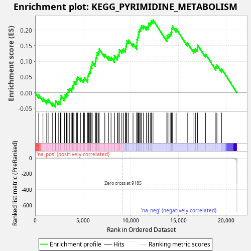
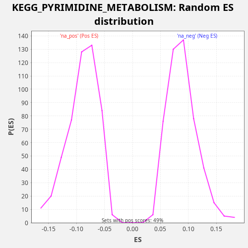

| Dataset | CCLE |
| Phenotype | NoPhenotypeAvailable |
| Upregulated in class | na_pos |
| GeneSet | KEGG_PYRIMIDINE_METABOLISM |
| Enrichment Score (ES) | 0.2319633 |
| Normalized Enrichment Score (NES) | 2.5976765 |
| Nominal p-value | 0.0 |
| FDR q-value | 7.7044533E-4 |
| FWER p-Value | 0.007 |

| SYMBOL | RANK IN GENE LIST | RANK METRIC SCORE | RUNNING ES | CORE ENRICHMENT | |
|---|---|---|---|---|---|
| 1 | CDA | 373 | 0.204 | -0.0069 | Yes |
| 2 | RRM2B | 819 | 0.043 | -0.0172 | Yes |
| 3 | ITPA | 1211 | 0.020 | -0.0249 | Yes |
| 4 | POLR3B | 1359 | 0.016 | -0.0210 | Yes |
| 5 | CTPS1 | 1831 | 0.008 | -0.0325 | Yes |
| 6 | POLD2 | 2111 | 0.006 | -0.0349 | Yes |
| 7 | POLD1 | 2131 | 0.006 | -0.0249 | Yes |
| 8 | POLR2G | 2424 | 0.004 | -0.0280 | Yes |
| 9 | POLR1D | 2623 | 0.004 | -0.0265 | Yes |
| 10 | DCTD | 2653 | 0.004 | -0.0170 | Yes |
| 11 | TYMS | 2711 | 0.003 | -0.0089 | Yes |
| 12 | POLR1C | 3069 | 0.003 | -0.0150 | Yes |
| 13 | PRIM2 | 3124 | 0.002 | -0.0067 | Yes |
| 14 | POLR2H | 3285 | 0.002 | -0.0034 | Yes |
| 15 | TXNRD1 | 3427 | 0.002 | 0.0008 | Yes |
| 16 | POLR2I | 3443 | 0.002 | 0.0109 | Yes |
| 17 | PNP | 3615 | 0.002 | 0.0137 | Yes |
| 18 | POLR3H | 3838 | 0.001 | 0.0140 | Yes |
| 19 | ENTPD6 | 3915 | 0.001 | 0.0212 | Yes |
| 20 | UPP1 | 4046 | 0.001 | 0.0259 | Yes |
| 21 | POLR2E | 4070 | 0.001 | 0.0357 | Yes |
| 22 | NT5C2 | 4294 | 0.001 | 0.0360 | Yes |
| 23 | UCK2 | 4352 | 0.001 | 0.0441 | Yes |
| 24 | ENTPD4 | 4436 | 0.001 | 0.0510 | Yes |
| 25 | NME2 | 4765 | 0.001 | 0.0463 | Yes |
| 26 | NME1 | 5073 | 0.001 | 0.0426 | Yes |
| 27 | POLA2 | 5172 | 0.001 | 0.0488 | Yes |
| 28 | POLR2C | 5504 | 0.000 | 0.0439 | Yes |
| 29 | CMPK2 | 5522 | 0.000 | 0.0540 | Yes |
| 30 | POLA1 | 5592 | 0.000 | 0.0616 | Yes |
| 31 | POLR3K | 5685 | 0.000 | 0.0681 | Yes |
| 32 | PNPT1 | 5810 | 0.000 | 0.0731 | Yes |
| 33 | CTPS2 | 5827 | 0.000 | 0.0832 | Yes |
| 34 | POLR1E | 5944 | 0.000 | 0.0885 | Yes |
| 35 | POLR2L | 5977 | 0.000 | 0.0979 | Yes |
| 36 | POLR3C | 6284 | 0.000 | 0.0942 | Yes |
| 37 | NT5C | 6306 | 0.000 | 0.1041 | Yes |
| 38 | TK1 | 6376 | 0.000 | 0.1116 | Yes |
| 39 | RRM1 | 6450 | 0.000 | 0.1190 | Yes |
| 40 | AK3 | 6483 | 0.000 | 0.1284 | Yes |
| 41 | UMPS | 6651 | 0.000 | 0.1313 | Yes |
| 42 | UPB1 | 6706 | 0.000 | 0.1396 | Yes |
| 43 | NME6 | 7294 | 0.000 | 0.1226 | Yes |
| 44 | CMPK1 | 7691 | 0.000 | 0.1146 | Yes |
| 45 | POLE | 7947 | 0.000 | 0.1134 | Yes |
| 46 | ENTPD1 | 8283 | 0.000 | 0.1083 | Yes |
| 47 | PRIM1 | 8289 | 0.000 | 0.1189 | Yes |
| 48 | CANT1 | 8599 | 0.000 | 0.1151 | Yes |
| 49 | ENTPD5 | 8676 | 0.000 | 0.1224 | Yes |
| 50 | POLE3 | 8796 | 0.000 | 0.1276 | Yes |
| 51 | DPYD | 8806 | 0.000 | 0.1380 | Yes |
| 52 | DTYMK | 9077 | 0.000 | 0.1361 | Yes |
| 53 | POLE4 | 9238 | -0.000 | 0.1393 | Yes |
| 54 | POLR2D | 9451 | -0.000 | 0.1401 | Yes |
| 55 | NT5C3A | 9499 | -0.000 | 0.1487 | Yes |
| 56 | POLR2A | 9564 | -0.000 | 0.1566 | Yes |
| 57 | POLR2K | 9604 | -0.000 | 0.1656 | Yes |
| 58 | POLR2F | 9787 | -0.000 | 0.1678 | Yes |
| 59 | POLR3GL | 10249 | -0.000 | 0.1568 | Yes |
| 60 | DHODH | 10637 | -0.000 | 0.1492 | Yes |
| 61 | RRM2 | 10649 | -0.000 | 0.1596 | Yes |
| 62 | CAD | 10658 | -0.000 | 0.1701 | Yes |
| 63 | POLR2B | 10733 | -0.000 | 0.1774 | Yes |
| 64 | POLE2 | 10793 | -0.000 | 0.1855 | Yes |
| 65 | TK2 | 10844 | -0.000 | 0.1940 | Yes |
| 66 | POLR2J | 10916 | -0.000 | 0.2015 | Yes |
| 67 | DUT | 11040 | -0.000 | 0.2065 | Yes |
| 68 | UCKL1 | 11109 | -0.000 | 0.2141 | Yes |
| 69 | POLD3 | 11341 | -0.000 | 0.2140 | Yes |
| 70 | NME7 | 11644 | -0.000 | 0.2105 | Yes |
| 71 | POLR1A | 11842 | -0.000 | 0.2120 | Yes |
| 72 | UCK1 | 11864 | -0.000 | 0.2219 | Yes |
| 73 | UPRT | 12050 | -0.000 | 0.2240 | Yes |
| 74 | POLR3F | 12165 | -0.000 | 0.2294 | Yes |
| 75 | NT5M | 12341 | -0.000 | 0.2320 | Yes |
| 76 | POLR2J2 | 13786 | -0.001 | 0.1742 | No |
| 77 | NT5C1B | 13819 | -0.001 | 0.1835 | No |
| 78 | POLR1B | 14005 | -0.001 | 0.1856 | No |
| 79 | POLR3G | 14138 | -0.001 | 0.1902 | No |
| 80 | NME4 | 14261 | -0.001 | 0.1953 | No |
| 81 | POLR3D | 14309 | -0.001 | 0.2039 | No |
| 82 | DCK | 14361 | -0.001 | 0.2123 | No |
| 83 | POLR2J3 | 14757 | -0.002 | 0.2044 | No |
| 84 | POLD4 | 15928 | -0.004 | 0.1597 | No |
| 85 | NME3 | 16627 | -0.007 | 0.1373 | No |
| 86 | NT5E | 16803 | -0.008 | 0.1399 | No |
| 87 | POLR3A | 16974 | -0.009 | 0.1427 | No |
| 88 | ENTPD3 | 17010 | -0.010 | 0.1519 | No |
| 89 | TYMP | 17848 | -0.019 | 0.1230 | No |
| 90 | TXNRD2 | 18920 | -0.060 | 0.0829 | No |
| 91 | NUDT2 | 19030 | -0.069 | 0.0886 | No |
| 92 | ENTPD8 | 19531 | -0.143 | 0.0757 | No |

{kind=link}
{kind=link}